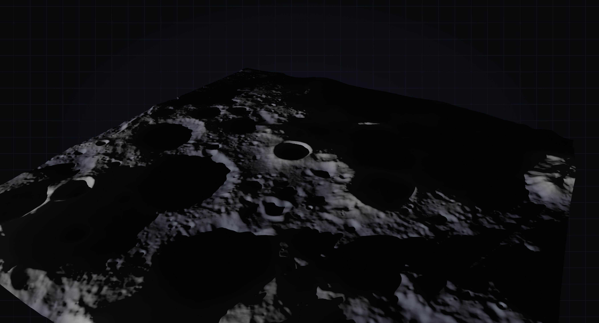
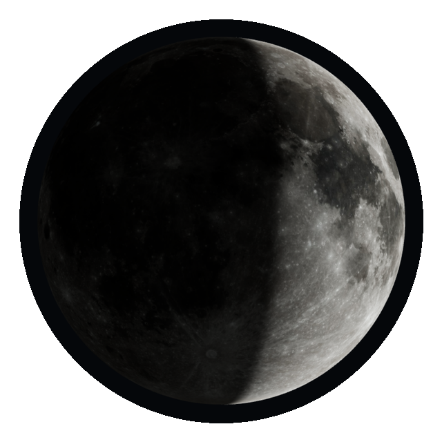
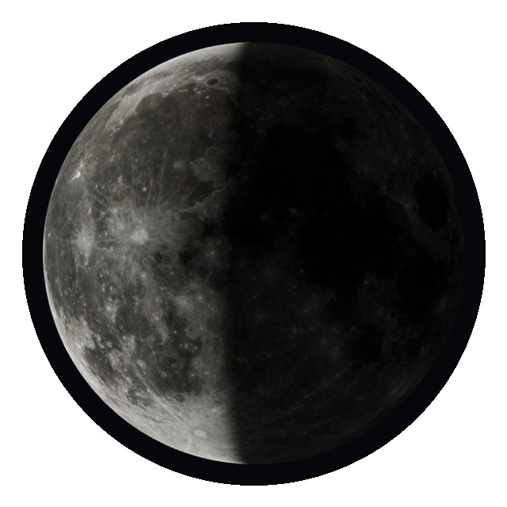

ด้วยข้อมูลจริงจากนาซา สำหรับนักเรียน ม.3


ในหนังสือเรียน · ภาพแบน 2 มิติ
หนังสือสอนระบบ 3 มิติ
ด้วยภาพแบน 2 มิติ
LUNARIS ให้นักเรียนสร้างระบบขึ้นใหม่
แล้วหมุนดูเอง
“ตอน ม.3 เรื่องนี้ไม่ได้ยาก แต่ใช้เวลานานมาก เพราะต้องนึกภาพ 3 มิติจากรูป 2 มิติในหนังสือ เราเข้าใจจริงก็ตอนที่ได้สร้างกระบวนการนั้นขึ้นเองในหัว”
คณะผู้ประดิษฐ์
ใน LUNARIS · 3 มิติ แสงจากตำแหน่งดวงอาทิตย์จริง
อุปกรณ์ชิ้นแรกของไทยที่จะไปดวงจันทร์ (CE-7 MATCH) ต้องรอ เพราะเงื่อนไขแสงอาทิตย์ที่จุดลงจอดใกล้ปล่องแชคเคิลตันไม่เป็นไปตามที่กำหนด
ที่มา: สดร. 24 ส.ค. 2569
ภูมิประเทศขั้วใต้จริง (LRO LOLA)






ภาพจาก LUNARIS คำนวณจากข้อมูลนาซา · % = ส่วนสว่าง

ยืนยันด้วยหลักฐาน
แล้วทดสอบหลังเรียน
ข้างขึ้นข้างแรม ม.3:
ระบบ 3 มิติ แต่เรียนจากภาพ 2 มิติ
เข้าใจผิดบ่อย: “เงาโลกทำให้เกิดข้างขึ้นข้างแรม”
ชุดกิจกรรมสืบเสาะ 5E 6 คาบ สำหรับ ม.3
สร้างและใช้แบบจำลองอธิบายข้างขึ้นข้างแรม จาก 2 มุมมอง
ตัดสินใจจากข้อมูลจริง ผ่านภารกิจเลือกจุดลงจอด
ชุดกิจกรรม 6 คาบ · ใบงาน 3 · แบบทดสอบ 20 ข้อ
สองมุมมอง
ข้อมูลจริง
ไม่มีคำตอบสำเร็จรูป
ตรวจเทียบ JPL Horizons ของนาซา
ประโยชน์
นักเรียน ม.3 และ
ครูวิทยาศาสตร์ ม.ต้น
ต่อยอดรายวิชา
โลกและอวกาศ ม.ปลาย
ใช้ฟรีผ่านเว็บ
ไม่ต้องซื้ออุปกรณ์
คอมพิวเตอร์
โทรศัพท์ โปรเจกเตอร์
อบรมครู
ขยายสู่โรงเรียนอื่น

ลองใช้
ได้เลย
คณะผู้ประดิษฐ์ {{INVENTORS}} · ครูที่ปรึกษา {{ADVISOR}} · โทร {{PHONE}} · อีเมล {{EMAIL}}
ข้อจำกัด: ไม่จำลองน้ำขึ้นน้ำลง · ภาพข้างขึ้นข้างแรมมองจากศูนย์กลางโลก · ยังไม่ได้ทดลองใช้กับนักเรียน | พัฒนาโดยใช้ปัญญาประดิษฐ์ช่วยเขียนโปรแกรม ภายใต้การกำกับและตรวจสอบของคณะผู้ประดิษฐ์ | ภาพทั้งหมดจับจากแอป LUNARIS · พื้นผิวดวงจันทร์: NASA SVS · ภูมิประเทศ: NASA LRO LOLA